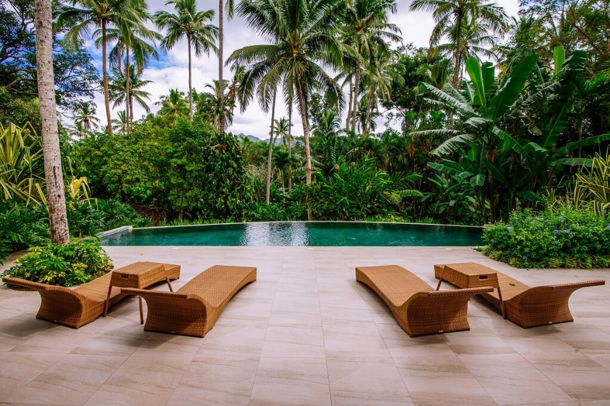
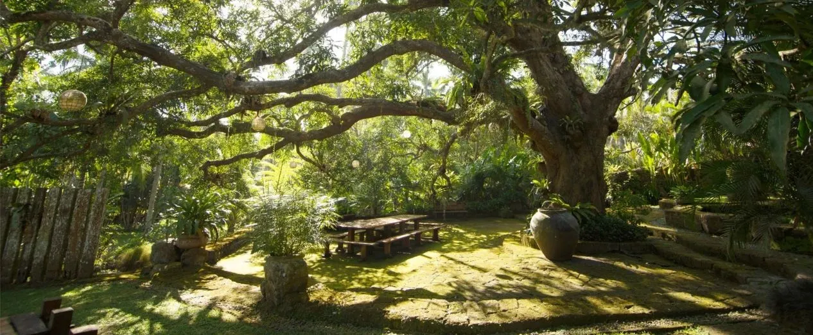
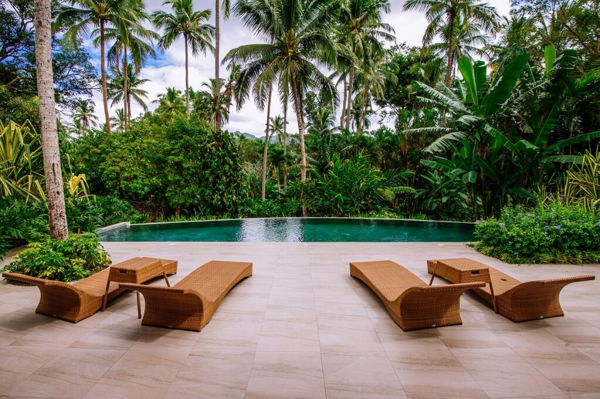
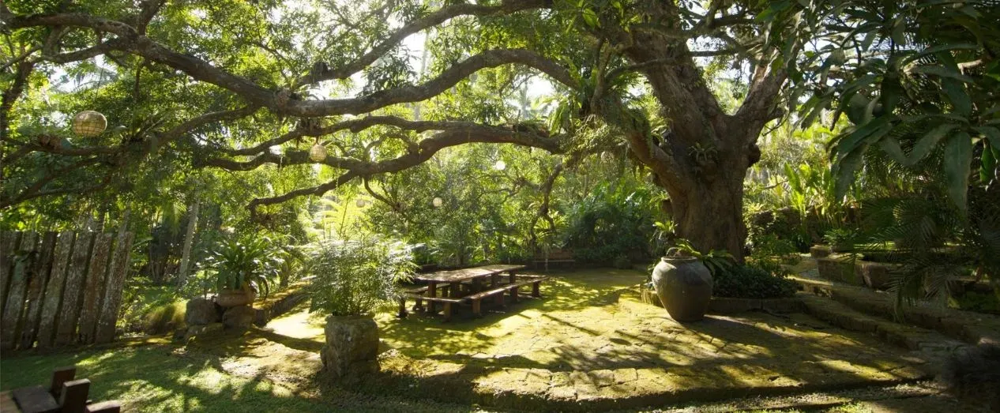

🌱 “Harmony in Nature” - A Wellness Day Immersion
A full-day retreat designed to reconnect guests with their breath, body, and the landscape around them.
The experience begins with a guided forest walk, where guests move at an unhurried pace, tuning in to
the sounds and textures of the garden pathways.
Mid-morning, participants gather for a mind-body grounding session-a blend of gentle stretching,
breathwork, and stillness beneath the trees. A plant-based lunch follows, crafted with ingredients
harvested from the Farm's organic gardens, celebrating nourishment in its purest form.
In the afternoon, guests explore hands-on wellness activities, such as herbal crafting,
tea blending, or mindful journaling. The day settles into a tranquil close with a sound bath
session, letting tones and vibrations sweep away the lingering static of daily life.